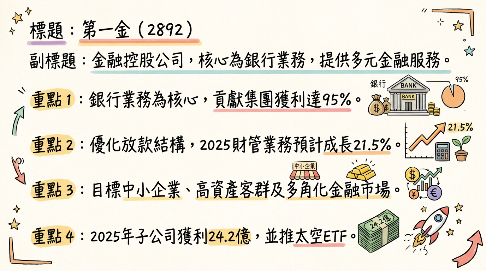
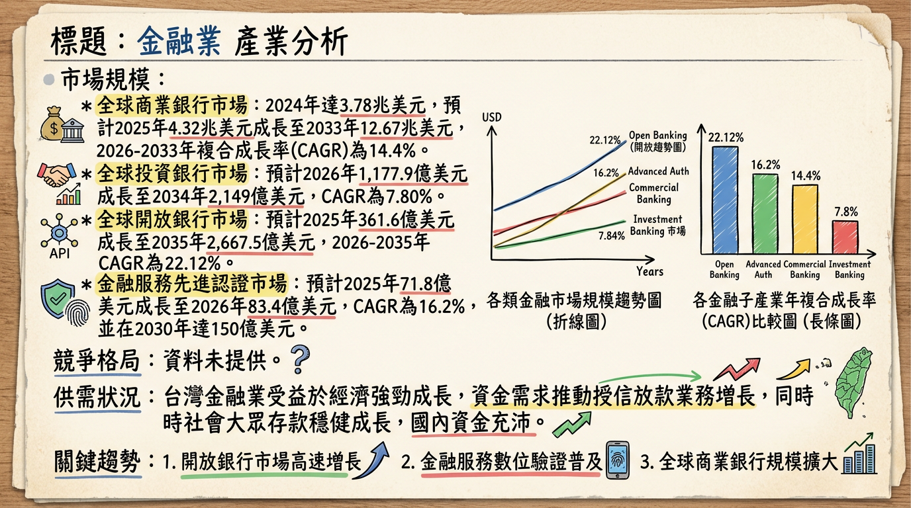
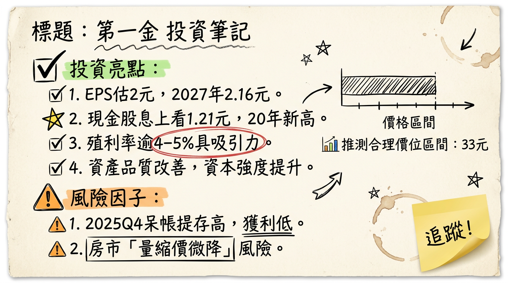

第一金控（2892）憑藉旗下核心子公司第一銀行在中小企業放款、外幣放款及高資產財富管理業務的卓越表現，連續五年獲利創新高。在穩健的資產結構、優化的股利政策及積極的數位轉型與跨境服務策略下，預期2026年將維持強勁成長動能，挑戰連六年獲利新高，並具備優於市場平均的現金股息殖利率。
第一金控是一家以金融控股公司型態運作的企業，其核心獲利引擎主要來自旗下子公司「第一商業銀行」。集團業務多元，涵蓋銀行、證券、人壽與資產管理等領域。
核心產品與服務：| 獲利來源 | 佔金控獲利比例（約） | 2025年表現 | 2026年目標 |
|---|---|---|---|
| 第一銀行 | 約 95% | 稅後淨利 256.63 億元，年增 7.8% | 繼續作為主力 |
| 非銀行子公司 | 約 9% (合計) | 獲利合計 24.20 億元，年增 4.5% | 提升至 10% |
金融控股公司無傳統製造基地，主要為營運據點。第一銀行擁有綿密的國內外據點，海外布局著重美國、日本與越南等市場，並於2025年8月在日本大阪設置出張所。此舉旨在支持台商赴美投資及佈局東南亞，提供跨境金融服務。目前公開資料未提及各海外據點具體的營收貢獻比例。
所屬細分產業與相關題材：* 跨境金融服務：因應全球供應鏈重組，提供台商海外融資與解決方案。
* ESG與數位轉型：營運策略核心，結合科技與永續經營。
* 資產品質優化：積極爭取中小企業放款及外幣放款，提升利差。
* 太空衛星概念：第一金投信於2025年12月推出「太空衛星ETF」。
| 月份 | 金額 (億元) | 月增率 MoM | 年增率 YoY |
|---|---|---|---|
| 226年1月 | 69.95 | +0.42% | +28.23% |
| 225年12月 | 69.66 | +11.7% | +14.9% |
| 225年11月 | 62.35 | -3.3% | +16.1% |
| 225年10月 | 64.52 | -3.4% | +21.8% |
| 225年09月 | 66.77 | -6.4% | +19.7% |
| 225年08月 | 71.32 | -5.3% | +3.2% |
| 年度/季度 | EPS (元) |
|---|---|
| 2025 Q3 | 0.54 |
| 2025 Q2 | 0.47 |
| 2025 Q1 | 0.51 |
| 2024 Q4 | 0.35 |
| 2024 Q3 | 0.49 |
| 2024 Q2 | 0.47 |
| 2024 Q1 | 0.50 |
| 年度 | 全年營收 (億元) | 全年稅後純益 (億元) | 年增率 YoY | EPS (元) | 備註 |
|---|---|---|---|---|---|
| 2024 (實際) | 不適用 | 253.6 | +13% | 1.81 | |
| 2025 (實際) | 775.68 | 269.33 | +6.2% | 1.87 | 連續五年創新高 |
| 2026 (預估) | 不適用 | 280.14 | +4.0% | 約 2.00 | 法人預估，CMoney |
第一金控於 2026年03月04日 舉行2025年第四季線上法人說明會，提出以下重點：
* 經營重點：「跨境服務」與「高資產理財」。
* 放款業務：
* 2025年總授信餘額年增 6.3%。
* 中小企業放款年增 6%，餘額首次突破兆元，為利差主要動能。
* 大企業授信成長 8%。
* 房貸業務年成長率維持 5.6%，預估 2026 年房貸業務成長率約 5% 至 6%。
* 外幣放款預估 2026 年可望達到雙位數成長，目標 15% 成長潛力。
* 財富管理業務：2025年淨手續費收入年增 9.2%，其中財富管理業務年增 21.5%。2026年仍是主要成長動能。
* SWAP（換匯交易）收益：2025年全年約 130 億至 135 億元。展望 2026 年，預估 SWAP 收益將維持在 100 億元左右的水準，金融商品損益預估僅小幅衰退 5%，可透過股票收益彌補。
* 非銀行子公司：2025年佔金控獲利約 9%，2026年目標朝 10% 邁進。
* 整體營運目標：銀行放款年增目標 5%，淨利息收入目標成長 15%，手續費收入預估成長 15%~16%。
* 房市展望：預估成交量將呈現微減、價格有小幅議價空間。
| 券商名稱 | 目標價 (元) | 評等 | 日期 |
|---|---|---|---|
| 國泰證券 | 33 | 看多 | 2026/03/05 |
| 某金控龍頭旗下投顧 | 33 | 買進 | 2026/03/09 |
| FactSet (平均) | 29.25 | 不適用 | 2024/12/13 (過時) |
| FactSet (平均) | 29 | 不適用 | 2025/03/11 (過時) |
| 券商名稱 | 2025年 EPS 預估 (元) | 2026年 EPS 預估 (元) | 2027年 EPS 預估 (元) |
|---|---|---|---|
| 國泰證券 | 1.87 | 1.93 | 不適用 |
| 某金控龍頭旗下投顧 | 不適用 | 2.00 | 2.16 |
| FactSet (平均) | 1.74 (中位數) | 1.73 (平均) | 不適用 |
| 法人機構平均 (CMoney) | 不適用 | 1.87 ~ 2.05 | 不適用 |
對於金融控股公司，傳統的毛利率指標不適用，主要關注淨利息收入、手續費收入及其他收益對淨利的貢獻。
獲利驅動因素分析：* 減資計畫：未找到2024年以後的減資計畫。
股利政策歷史| 年度盈餘 (發放年度) | 現金股利 (元/股) | 股票股利 (元/股) | 總股利 (元/股) | 現金股息配發率 |
|---|---|---|---|---|
| 2023 (2024年發放) | 0.85 | 0.30 | 1.15 | 不適用 |
| 2024 (2025年發放) | 0.95 | 0.25 | 1.20 | 不適用 |
| 2025 (預計2026年發放) | 1.21 (預估) | 0.10 (預估) | 1.31 (預估) | 65% (提案) |
* 全球投資銀行市場規模預計從2026年的1,177.9億美元成長到2034年的2,149億美元，CAGR為7.80%。
* 全球開放銀行市場預計2025年361.6億美元，2035年增至2,667.5億美元，2026-2035年CAGR為22.12%。
* 金融服務市場中先進認證市場規模預計2025年71.8億美元，2026年增至83.4億美元，CAGR為16.2%。
* 2025年銀行業放款動能持續，中小企業放款餘額成長5,504億元，超標。
* 外幣放款餘額達6,254億元，全年新增1,464億元創歷史新高，2026年預計高檔成長，AI相關產業是主要驅動力。
* 對六大核心戰略產業放款餘額截至2025年11月底達8.2兆元。
* 央行信用管制（如DTI比率、無擔保信貸額度限制）預計深化，銀行放款策略將從「放量」轉向「風控」。
* 2024年台灣金融三業稅前盈餘1.06兆元創新高，銀行業貢獻逾五成。
* 2025年金融三業獲利9,880億元，雖年減6.7%，但銀行業獲利仍創新高。
* 預計2026年台灣銀行業信用評等維持「穩定」，ROAA約0.75%。
由於金融控股公司業務複雜且跨國經營，全球前五大金融控股公司及其在各項細分業務的精確市佔率數據難以取得最新且全面的資料。通常全球排名基於市值或資產規模，這與具體業務市佔率有所區別。
第一金控 vs. 主要競爭對手比較：| 比較項目 | 第一金控 (2892) | 台灣主要競爭同業 (例如富邦金、國泰金、中信金等) | 備註 |
|---|---|---|---|
| 營收規模/獲利 | 2025年稅後淨利269.33億元，EPS 1.87元。 | (未提供2025-2026年具體直接比較數據) | 金控旗下的本國銀行營收佔總營收76.4% (2024)。 |
| 資產配置策略 | 轉向利差較高的中小企業放款、外幣放款。 | 各家策略不同，普遍追求高資產、數位轉型及綠色金融。 | 第一銀行中小企業放款餘額突破兆元，外幣放款大幅成長。 |
| 數位金融 | 機器人理財資產規模24.84億元 (2025/12)，公股行庫第一 (市佔約15%)。 | 普遍積極導入AI (87%銀行已導入AI，61家使用生成式AI)。 | 展現數位理財領先地位，吸引中產族群。 |
| 高資產財管 | 2025年財富管理業務年增21.5%。深化高資產客戶理財。 | 各金控皆積極拓展財富管理業務，受惠財管2.0政策。 | 台灣高資產客戶財富管理規模2.25兆元 (2026/1)，年增56.37%。 |
| 企業放款 | 對六大核心戰略產業放款餘額為前五大銀行之一。 | 其他公股銀行及大型民營銀行亦積極參與。 | 顯示在支持國家重點產業方面的參與度和競爭力。 |
| 海外佈局 | 積極佈局美國、日本、越南，支援台商跨境金融。 | 其他大型金控亦有廣泛海外據點，如中信金在東南亞佈局深廣。 | 因應全球供應鏈重組及關稅變動，提供台商海外融資與解決方案。 |
* 影響：AI已成金融業重要驅動力。截至2025年，87%銀行導入AI，其中61家採用生成式AI，提升風險評估、客戶服務、營運效率。開放銀行模式CAGR達22.12%，透過API實現數據共享，推動產品創新。金融服務中高級認證技術需求激增，AI驅動的詐欺偵測和無密碼驗證將是2026-2030年主要方向。
* 對第一金的機會：第一銀行在機器人理財領域領先公股銀行，可持續投入AI應用，優化客戶體驗、提升效率，並拓展數位金融產品。
* 對第一金的威脅：持續數位轉型需要大量投資，同時面臨不斷升級的資安風險和同業激烈的數位創新競爭。
* 影響：邁向2050淨零排放是全球趨勢。台灣金管會推動「綠色與轉型金融行動方案」，引導企業減碳。銀行業被視為轉型關鍵，綠色授信及永續績效連結授信案件增長，促使銀行將資金導向符合永續轉型企業，並開發相關金融產品。
* 對第一金的機會：積極參與永續金融相關業務，提供綠色授信和ESG投資產品，響應政策並抓住新的市場需求。
* 對第一金的威脅：需承擔協助企業轉型過程中的潛在風險，以及未能達到ESG標準可能面臨的聲譽風險。
* 影響：政府推動「亞洲資產管理中心」與「財富管理2.0」，放寬高資產客戶門檻，允許設立家族型資產管理公司。這將促使銀行提升財富管理服務品質、商品研發及人才培育，吸引海外資金回流。截至2026年1月底，台灣高資產客戶的財富管理規模已達2.25兆元，年成長56.37%。
* 對第一金的機會：利用在財富管理領域的投入，把握高資產客戶需求，提供客製化產品服務，擴大私人銀行版圖。
* 對第一金的威脅：同業在高資產財管領域競爭激烈，需要不斷創新並提升服務能力以維持競爭力。
| 時間 | 成長動能 | 具體內容 |
|---|---|---|
| 2025年 | 資產結構優化效益顯現 | 總授信餘額年增6.3%，其中中小企業放款年增6%（餘額首次突破兆元），外幣放款年增9%。財富管理業務年增21.5%。這些高利差業務帶動第一金控2025年稅後淨利達269.33億元，連續五年創新高，EPS 1.87元。 |
| 2025年8月 | 海外據點擴張 | 第一銀行於日本設置大阪出張所，加速海外佈局，提升對日台商服務量能。 |
| 2025年12月 | 資產管理產品創新 | 第一金投信推出「太空衛星ETF」，抓緊新興科技產業趨勢，拓展資產管理業務多元性。 |
| 2026年 | 跨境服務深化 | 因應全球關稅變動與供應鏈重組，第一銀行將利用其綿密的海內外據點網絡（如美國、日本、越南），積極提供台商海外投資所需的融資與跨境金融解決方案。 |
| 2026年 | 高資產財富管理擴張 | 鎖定高資產客戶，利用高雄亞灣區法規鬆綁契機，擴大高資產財富管理範疇及私人銀行版圖，引進多元化理財商品，把握海外回流資金的商機。 |
| 2026年 | 外幣放款與存放比提升 | 預估外幣放款將有雙位數成長，目標15%的成長潛力，成為帶動長期利潤的關鍵。同時，將同步擴大外幣存放款規模，美元存放比目標提升至45%至46%，有利於淨利息收入成長。 |
| 2026年 | 美國聯準會降息兩次預期 | 聯準會預期降息兩次將有助於壓低外幣資金成本，進而擴大銀行利差，直接提升淨利息收入。 |
| 2026年 | 非銀行子公司獲利貢獻提升 | 證券與人壽等非銀行子公司的獲利貢獻目標，將從2025年的9%提升至10%，提供更多元的獲利來源。第一金人壽在雙接軌新制後，CSM開帳餘額約100億元，預計2026年貢獻獲利約8.4億元，並以CSM年成長10%為目標。 |
| 2026年 | 數位轉型與ESG經營策略 | 結合AI與數位科技，提升營運效率、優化客戶體驗，並推動綠色金融，響應淨零碳排趨勢，爭取綠色授信商機，打造更穩健的獲利引擎。第一銀行在機器人理財領域的領先地位將繼續發揮作用。 |
| 長期趨勢 | AI產業發展帶動融資需求 | 台灣在AI相關產業的領導地位將持續帶來龐大的資金需求，尤其在外幣放款方面，為銀行業提供穩定的放款成長動能。 |
第一金控作為台灣大型金控，在2025年繳出亮眼成績單，並透過明確的策略布局，展現了強勁的成長潛力。
綜合以上分析，考量其穩健的獲利能力、積極的業務策略轉型效益、具吸引力的股利政策以及良好的風險控制，我們對第一金控的投資前景持樂觀態度。參考券商目標價及未來獲利預期，我們建議投資者可將其視為長期穩健配置標的，目標價區間建議為 32.5元至34.5元。
本報告由 AI 自動產生，資料來源為公開網路資訊，僅供參考，不構成投資建議。產生時間：2026-03-09 22:09


